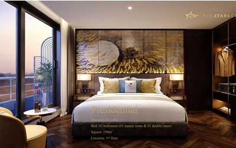
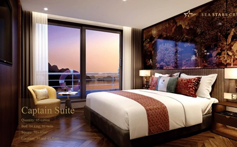
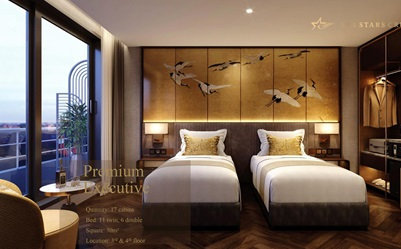
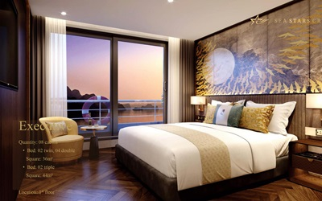
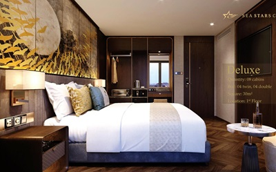

基本資料
- 船隻名稱: 海洋之星號 (Sea Stars Cruise Ha Long)
- 首航年份: 2023 年 (全新啟航)
- 隸屬: Sea Stars Hotel and Cruise
- 載客量: 118 名乘客
- 房間數: 39 間
- 總長度: 96 公尺
- 寬度: 15.5 公尺
- 高度: 26.5 公尺
- 甲板樓層: 5 層
- 接待語言: 英語、越南語
精選房型

總統套房 (Presidential)
198平方公尺, 在三樓共1間, 有1間主臥房+1間雙人房。

船長套房 (Capitan Suite)
70~83平方公尺, 在三樓四樓共5間, 有4間大床房+1間雙人房。

高級行政房 (Premium Executive)
30平方公尺, 在三樓四樓共17間, 有6間大床房+11間雙人房。

行政房 (Executive)
36平方公尺, 在一樓共8間, 有4間大床房+4間雙人房。

豪華套房 (Deluxe)
30平方公尺, 在一樓共8間, 有4間雙床房、4間雙人房。
美食饗宴
主餐廳 (免費)
2F,270平方公尺, 可同時服務100人, 有復古的歐亞式裝潢。
VIP Lounge (付費)
提供音樂及飲料。
船上娛樂設施
- SPA養生會館(付費): 1F, 提供每人30分鐘 SPA 給總統套房, 其餘房型皆須付費; 按摩室、蒸氣室
- KTV影音室(付費): 1F, KTV 影音室, 需先預約
- 健身中心(免費): 1F, 24hr
- Sundeck 音樂場(Carina星空吧): 晚上提供現場音樂。
- 高爾夫練習場: 迷你高爾夫。
- 頂層日光甲板: 日光浴。
- 交誼廳: 交誼廳。
- 游泳池: 2F, 半室內、半室外的游泳池。
- 吸菸: 戶外吸菸。
2天1夜行程
海洋之星號提供2天的船上行程:
第一天行程
- 11:15 AM: Radisson Blu Hotel 飯店 1F 大廳, 下龍國際郵輪港辦理登船報到。
- 12:15 PM: 享用迎賓飲品, 郵輪經理會介紹2天1夜的行程和安全規定。
- 12:15~1:30 PM: 奢華百匯自助餐, 同時遊輪將駛過由數千個石灰岩地形的獨特景觀, 例如世界自然遺產地的著名傑作 Am Tich 島和 Mat Quy 島。這次航程將穿越白子龍灣和下龍灣。
- 2:30 PM: 參訪 Tung Sau 東秀珍珠養殖場和採摘活動; 體驗划獨木舟。
- 3:45 PM: 探索蒂托普島 Titop 島; 自由下海游泳。
- 5:00~6:30 PM: 5F, Happy Hour 酒精飲品買一送一（果汁）; 免費點心。
- 5:30 PM: 製作傳統越南料理課程。
- 5:30 PM～: 使用船上設施(游泳池、付費KTV、付費水療SPA)。
- 5:30 PM~: 2樓奢華主廚精選晚宴, 遊輪停泊在 Luon Bo 地區。
- 8:30 PM: 遊輪星空派對。
- 8:30 PM～: 夜釣魷魚、小卷、打高爾夫球。
第二天行程
- 6:15~6:45 AM: 日光甲板晨間太極、1樓健身房。
- 7:00~7:45 AM: 2樓豪華自助早餐。
- 8:00 AM: 驚訝洞探險(Sung Sot Cave)。
- 9:00 AM: 辦理退房及結帳。
- 9:30~10:45 AM: 享用輕奢早午餐。
- 11:00 AM: 返航下龍灣碼頭 Radisson Blu Hotel。
常見問答 (QA)
Q1: 船上的消費如何支付？
A: 登船時, 您會領到一張「海星卡」（即房卡）。船上所有消費（付費餐廳、購物、岸上行程、小費等）都會記錄至此卡, 並在航程第2天早上結算。您可於登船時綁定信用卡（建議）, 或於航程結束前至服務台以現金（美元/越南盾）結清。
Q2: 船上是否有 Wi-Fi 網路？
A: 有, 密碼是6個8, 但是航行時有些地方的網路連結會受限。
Q3: 我需要準備什麼樣的服裝？
A: 白天以休閒、舒適為主（T恤、短褲、休閒褲）。建議攜帶泳衣（使用泳池）、運動服（使用健身房）與一件薄外套（室內空調較強）。
Q4: 有其他的服務嗎？
A: 每房有2瓶礦泉水、咖啡、茶; 淡季時可能有迎賓水果。
Q4: 飲料價格如何？
A: 酒精性飲料大約20~30萬元越南盾; 咖啡和茶大約10～15萬越南盾; 果汁大約15～20萬越南盾。